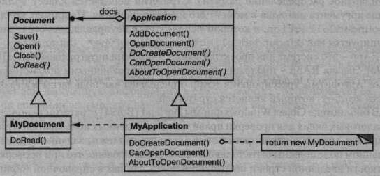

Название и классификация паттерна
Шаблонный метод — паттерн поведения классов.
Назначение
Шаблонный метод определяет основу алгоритма и позволяет подклассам переопределить некоторые шаги алгоритма, не изменяя его структуру в целом.
Мотивация
Рассмотрим каркас приложения, в котором имеются классы Application и Document. Класс Application отвечает за открытие существующих документов, хранящихся во внешнем формате, например в виде файла. Объект класса Document представляет информацию документа после его прочтения из файла.
Приложения, построенные на базе этого каркаса, могут порождать подклассыот классов Application и Document, отвечающие конкретным потребностям.Например, графический редактор определит подклассы DrawApplicationи DrawDocument, а электронная таблица — подклассы Spreadsheet Application и SpreadsheetDocument.
В абстрактном классе Application определен алгоритм открытия и считывания документа в операции OpenDocument:
void Application::OpenDocument (const char* name) {
if (!CanOpenDocument(name)) {
// работа с этим документом невозможна
return;
}
Document* doc = DoCreateDocument();
if (doc) {
_docs->AddDocument(doc);
AboutToOpenDocument(doc);
doc->0pen();
doc->DoRead();
}
}
Операция OpenDocument определяет все шаги открытия документа. Она проверяет, можно ли открыть документ, создает объект класса Document, добавляет его к набору документов и считывает документ из файла.
Операцию вида OpenDocument мы будем называть шаблонным методом, описывающим алгоритм в терминах абстрактных операций, которые замещены в подклассах для получения нужного поведения. Подклассы класса Appl icat ion выполняют проверку возможности открытия (CanOpenDocument) и создания документа(DoCreateDocument). Подклассы класса Document считывают документ (DoRead). Шаблонный метод определяет также операцию, которая позволяет подклассам Application получить информацию о том, что документ вот-вот будет открыт (AboutToOpenDocument). Определяя некоторые шаги алгоритма с помощью абстрактных операций, шаблонный метод фиксирует их последовательность, но позволяет реализовать их в подклассах классов Application и Document.
Применимость
Паттерн шаблонный метод следует использовать:
- чтобы однократно использовать инвариантные части алгоритма, оставляя реализацию изменяющегося поведения на усмотрение подклассов;
- когда нужно вычленить и локализовать в одном классе поведение, общее для всех подклассов, дабы избежать дублирования кода. Это хороший пример техники «вынесения за скобки с целью обобщения», описанной в работе Уильяма Опдайка (William Opdyke) и Ральфа Джонсона (Ralph Johnson)[OJ93]. Сначала идентифицируются различия в существующем коде, а затем они выносятся в отдельные операции. В конечном итоге различающиеся фрагменты кода заменяются шаблонным методом, из которого вызываются новые операции;
- для управления расширениями подклассов. Можно определить шаблонный метод так, что он будет вызывать операции-зацепки (hooks) - см. раздел «Результаты» - в определенных точках, разрешив тем самым расширение только в этих точках.
Структура
Участники
AbstractClass (Application) — абстрактный класс:
- определяет абстрактные примитивные операции, замещаемые в конкретных подклассах для реализации шагов алгоритма;
- реализует шаблонный метод, определяющий скелет алгоритма. Шаблоный метод вызывает примитивные операции, а также операции, определенные в классе AbstractClass или в других объектах;
ConcreteClass (MyApplication) — конкретный класс:
- реализует примитивные операции, выполняющие шаги алгоритма способом, который зависит от подкласса.
Отношения
ConcreteClass предполагает, что инвариантные шаги алгоритма будут выполнены в AbstractClass.
Результаты
Шаблонные методы - один из фундаментальных приемов повторного использования кода. Они особенно важны в библиотеках классов, поскольку предоставляют возможность вынести общее поведение в библиотечные классы.
Шаблонные методы приводят к инвертированной структуре кода, которую иногда называют принципом Голливуда, подразумевая часто употребляемую в этой киноимперии фразу «Не звоните нам, мы сами позвоним» [Swe85]. В данном случае это означает, что родительский класс вызывает операции подкласса, а не наоборот.
Шаблонные методы вызывают операции следующих видов:
- конкретные операции (либо из класса ConcreteClass, либо из классов клиента);
- конкретные операции из класса AbstractClass (то есть операции, полезные всем подклассам);
- примитивные операции (то есть абстрактные операции);
- фабричные методы (см. паттерн фабричный метод);
- операции-зацепки (hook operations), реализующие поведение по умолчанию, которое может быть расширено в подклассах. Часто такая операция по умолчанию не делает ничего.
Важно, чтобы в шаблонном методе четко различались операции-зацепки (которые можно замещать) и абстрактные операции (которые нужно замещать). Чтобы повторно использовать абстрактный класс с максимальной эффективностью, авторы подклассов должны понимать, какие операции предназначены для замещения.
Подкласс может расширить поведение некоторой операции, заместив ее и явно вызвав эту операцию из родительского класса:
void DerivedClass::Operation () {
ParentClass::Operation();
// Расширенное поведение класса Periveddass
}
К сожалению, очень легко забыть о необходимости вызывать унаследованную операцию. У нас есть возможность трансформировать такую операцию в шаблонный метод с целью предоставить родителю контроль над тем, как подклассы расширяют его. Идея в том, чтобы вызывать операцию-зацепку из шаблонного метода в родительском классе. Тогда подклассы смогут переопределить именно эту операцию:
void ParentClass::Operation () {
// Поведение родительского класса ParentClass
HookOperation();
}
В родительском классе ParentClass операция HookOperation не делает ничего:
void ParentClass::Operation () {
}
Но она замещена в подклассах, которые расширяют поведение:
void DerivedClass::HookOperation () {
//расширение в производном классе
}
Реализация
Стоит рассказать о трех аспектах, касающихся реализации:
- использование контроля доступа в C++. В этом языке примитивные операции, которые вызывает шаблонный метод, можно объявить защищенными членами. Тогда гарантируется, что вызывать их сможет только сам шаблонный метод. Примитивные операции, которые обязательно нужно замещать, объявляются как чисто виртуальные функции. Сам шаблонный метод замещать не надо, так что его можно сделать невиртуальной функцией-членом;
- сокращение числа примитивных операций. Важной целью при проектировании шаблонных методов является всемерное сокращение числа примитивных операций, которые должны быть замещены в подклассах. Чем больше операций нужно замещать, тем утомительнее становится программирование клиента;
- соглашение об именах. Выделить операции, которые необходимо заместить, можно путем добавления к их именам некоторого префикса. Например, в каркасе МасАрр для приложений на платформе Macintosh [App89] имена шаблонных методов начинаются с префикса Do: DoCreateDocument, DoRead и т.д.
Пример кода
Следующий написанный на C++ пример показывает, как родительский класс может навязать своим подклассам некоторый инвариант. Пример взят из библиотеки NeXT AppKit [Add94]. Рассмотрим класс View, поддерживающий рисование на экране, - своего рода инвариант, заключающийся в том, что подклассы могут изменять вид только тогда, когда он находится в фокусе. Для этого необходимо, чтобы был установлен определенный контекст рисования (например, цвета и шрифты).
Чтобы установить состояние, можно использовать шаблонный метод Display. В классе View определены две конкретные операции (SetFocus и ResetFocus), которые соответственно устанавливают и сбрасывают контекст рисования. Операция-зацепка DoDisplay класса View занимается собственно рисованием. Display вызывает SetFocus перед DoDisplay, чтобы подготовить контекст, и ResetFocus после DoDisplay - чтобы его сбросить:
void View::Display () {
SetFocus();
DoDisplay();
ResetFocus'() ;
}
С целью поддержки инварианта клиенты класса.View всегда вызывают Display и подклассы View всегда замещают DoDisplay. В классе View операция DoDisplay не делает ничего:
В классе View операция DoDisplay не делает ничего:
void View::DooDisplay () { }
Чтобы она что-то рисовала, подклассы переопределяют ее:
void MyView::DooDisplay () {
// изобразить содержимое вида
}
Известные применения
Шаблонные методы настолько фундаментальны, что встречаются почти в каждом абстрактном классе. В работах Ребекки Вирфс-Брок и др. [WBWW90, WBJ90] подробно обсуждаются шаблонные методы.
Родственные паттерны
Фабричные методы часто вызываются из шаблонных. В примере из раздела «Мотивация» шаблонный метод OpenDocument вызывал фабричный метод DoCreateDocument.
Стратегия: шаблонные методы применяют наследование для модификации части алгоритма. Стратегии используют делегирование для модификации алгоритма в целом.